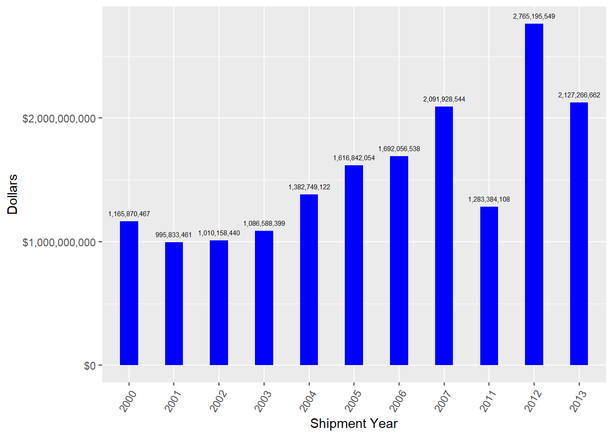

Chapter 4 Trends over time
Let’s explore how some trends change over time.
4.1 Shipments
Let’s summarized the number of unique shipments per month.
unique_shipments_year <-data %>%
group_by(year= year(shipment_date),month = month(shipment_date)) %>%
summarise(unique_shipments = n_distinct(control_number))
unique_shipments_year$date <- as.yearmon(paste(unique_shipments_year$year,
unique_shipments_year$month), "%Y %m")
ggplot(unique_shipments_year, aes(x = date, y = unique_shipments)) +
geom_line(color='steelblue') + scale_x_continuous()
Let’s see the pattern depending on the week of the year
4.2 Value (US dollars)
4.2.1 Measured by disposition year
value_wildlifeproduct_dispyear <-data %>%
filter(!is.na(value)) %>%
filter(!is.na(disposition_year)) %>%
group_by(disposition_year) %>%
summarise(value = sum(as.numeric(value)))
DT::datatable(value_wildlifeproduct_dispyear) %>%
formatCurrency('value',currency = "", interval = 3, mark = ",")ggplot(value_wildlifeproduct_dispyear, aes(x = disposition_year, y=value)) +
geom_bar(stat = "identity", width=0.4, position = position_dodge(width=0.5),
fill="blue") +
geom_text(aes(label = scales::comma(value)), vjust=-1, size=2) +
scale_y_continuous(labels = scales::dollar_format(prefix="$")) +
labs(y = "Dollars", x="Disposition Year") +
theme(axis.text.x = element_text(hjust=1, angle=60)) 
4.3 Measured by shipment year
value_wildlifeproduct_shipyear <-data %>%
filter(!is.na(value)) %>%
filter(!is.na(shipment_year)) %>%
group_by(shipment_year) %>%
summarise(value = sum(as.numeric(value)))
DT::datatable(value_wildlifeproduct_shipyear) %>%
formatCurrency('value',currency = "", interval = 3, mark = ",")ggplot(value_wildlifeproduct_shipyear, aes(x = shipment_year, y=value)) +
geom_bar(stat = "identity", width=0.4, position = position_dodge(width=0.5),
fill="blue") +
geom_text(aes(label = scales::comma(value)), vjust=-1, size=2) +
scale_y_continuous(labels = scales::dollar_format(prefix="$")) +
labs(y = "Dollars", x="Shipment Year") +
theme(axis.text.x = element_text(hjust=1, angle=60)) 
4.4 Quantity (number of items)
Let’s summarized the number of items brought per year. We won’t include in the analysis the others 12 types of units due to they only represent 5.35% of the data.
quantity_year<- data %>% filter(unit=="Number") # 5,451,832 -> 5,159,632 rows
quantity_year_summary<- quantity_year %>%
group_by(shipment_year, unit) %>%
summarise(quantity = sum(quantity))
DT::datatable(quantity_year_summary) %>% formatCurrency('quantity',
currency = "",
interval = 3, mark = ",")ggplot(quantity_year_summary,
aes(x = shipment_year, y=quantity)) +
geom_bar(stat = "identity", width=0.4,
position = position_dodge(width=0.5), fill="blue") +
geom_text(aes(label = scales::comma(quantity)), vjust=-1, size=2) +
labs(y = "Number", x="Shipment Year") +
theme(axis.text.x = element_text(hjust=1, angle=60))